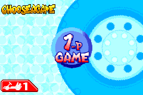
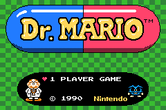
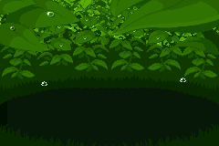
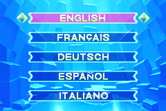
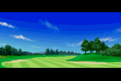

Serial Link Cable & Multiplayer Communications Reference
EXT.) driven by an internal Serial Input/Output (SIO) controller. The hardware supports multiple distinct physical and electrical operating modes: 16-bit token ring networking (up to 4 consoles), 8-bit/32-bit synchronous serial, asynchronous UART, bit-banged GPIO, high-speed single-wire GameCube Joybus communications, and 2.4 GHz RF wireless networking via the AGB-015 Wireless Adapter. Furthermore, the GBA BIOS embeds the MultiBoot routine (SWI 0x25), enabling single-cartridge multiplayer ("Download Play") by streaming executable payloads directly into client console EWRAM without requiring slave cartridges.
SIO Hardware Register Maps & External Port Pinout
1. External 6-Pin Serial Port Connector (EXT.)
The GBA console features a custom keyed 6-pin female connector at the top edge of the chassis:
| Pin | Signal | Direction | Signal Description & Electrical Characteristics |
|---|---|---|---|
1 | VCC | Output | 3.3V DC power supply from GBA battery (max ~1mA on standard hardware; supplies RF transceiver circuitry on AGB-015 Wireless Adapter). |
2 | SO | Output / Bi | Serial Data Output in Normal/Multi-Play mode. Bidirectional single-wire data line in Joybus mode. Bit-banged GPIO output via RCNT. |
3 | SI | Input | Serial Data Input from preceding unit in link chain. Can trigger CPU interrupt on falling edge via RCNT bit 8. |
4 | SD | Bidirectional | Serial Data / Select line. Connects together across all link cable plugs to verify complete multi-console ring connection. |
5 | SC | Bi / Clock | Serial Clock line. Driven by Master console (or internal baud generator) in synchronous modes; received by Slaves. |
6 | GND | Power | Common system ground reference (0V). |
2. SIO Memory-Mapped Register Specifications (0x04000120..0x04000158)
| Address | Register Name | Access | Width | Description & Bit Definitions |
|---|---|---|---|---|
0x04000120 |
SIODATA32 / SIOMULTI0 |
R/W | 32 / 16-bit | In Normal 32-bit mode: 32-bit shift register (SIODATA32). In Multi-Play mode: 16-bit data register from Unit 0 (Master, SIOMULTI0). |
0x04000122 |
SIOMULTI1 |
R | 16-bit | Multi-Play receive data register from Unit 1 (Slave 1). Populated simultaneously across all units during ring network transfer. |
0x04000124 |
SIOMULTI2 |
R | 16-bit | Multi-Play receive data register from Unit 2 (Slave 2). Populated during 3-player and 4-player ring transfers. |
0x04000126 |
SIOMULTI3 |
R | 16-bit | Multi-Play receive data register from Unit 3 (Slave 3). Populated during 4-player ring transfers. |
0x04000128 |
SIOCNT |
R/W | 16-bit | Serial Interface Control. Bits 0..1: Baud rate (9600, 38400, 57600, 115200 bps in Multi-Play) / Clock select (Normal). Bits 2..3: Multi-Play Unit ID (00=Master, 01=Slave 1, 10=Slave 2, 11=Slave 3). Bit 4: Error flag. Bit 5: SD Connected flag. Bit 7: Start/Busy flag. Bits 12..13: SIO Mode (00=Normal, 01=Multi-Play, 10=UART, 11=GPIO/Joybus). Bit 14: SIO IRQ Enable. |
0x0400012A |
SIODATA8 |
R/W | 8-bit | Normal 8-bit mode serial shift register. Transmits and receives 1 byte synchronously with external or internal clock. |
0x04000134 |
RCNT |
R/W | 16-bit | SIO Mode & General Purpose / Joybus Control. Bits 0..3: SC, SD, SI, SO pin data states. Bits 4..7: Pin direction (0=Input, 1=Output). Bit 8: SI Interrupt Enable. Bits 14..15: Operating Mode (00=GPIO, 10=Joybus mode 0xC000 / 0xC304, 11=Serial Communication via SIOCNT). |
0x04000140 |
JOYCNT |
R/W | 16-bit | GameCube Joybus Control. Bit 0: Reset flag. Bit 1: RECV Completed flag. Bit 2: SEND Completed flag. Bit 6: Joybus IRQ Enable. |
0x04000150 |
JOY_RECV |
R/W | 32-bit | Joybus Receive Data register. Stores 4 incoming bytes received from the Nintendo GameCube host. |
0x04000154 |
JOY_TRANS |
R/W | 32-bit | Joybus Transmit Data register. Stores 4 outgoing bytes to be read by the Nintendo GameCube host. |
0x04000158 |
JOYSTAT |
R/W | 8-bit | Joybus Status Register. Bit 1: Send completed flag. Bit 3: Receive completed flag. Transmitted to GameCube upon command 0x00 status requests. |
SIO Operating Modes
1. Multi-Play Mode (16-bit Ring Network · 1,689 Verified Titles)
- Network Baud Rates
- Master selects transmission clock via
SIOCNTbits 0..1:9,600 bps(00b),38,400 bps(01b),57,600 bps(10b), or115,200 bps(11b). Almost all retail titles run at 115,200 baud for minimum latency (~1.2 ms per full 4-player exchange). - Token Ring Arbitration
- Master writes its outgoing 16-bit payload into
SIODATA8/SIOMULTI0(0x04000120) and setsSIOCNTbit 7 (Start). Slaves write their 16-bit words into their localSIOMULTIregisters. The hardware simultaneously shifts data through all 4 consoles in a closed ring. - Simultaneous Broadcast
- Upon completion, every console holds the exact 16-bit words from all participants in registers
SIOMULTI0,SIOMULTI1,SIOMULTI2, andSIOMULTI3. The hardware automatically clears bit 7 and fires the SIO interrupt (if enabled via bit 14). - Hardware Unit ID
- Console automatically derives its own participant ID from
SIOCNTbits 2..3 (00= Master,01= Slave 1,02= Slave 2,03= Slave 3). - Connection Sensing
SIOCNTbit 5 (SDline) goes HIGH when all cable connectors are seated properly, confirming the electrical ring is closed.
2. Normal Serial Mode (8-bit and 32-bit Master/Slave)
Synchronous SPI-like serial shift register. In 8-bit mode (SIODATA8), backwards-compatible with Game Boy and Game Boy Color link cables at 256 KHz or 2 MHz clock rates. In 32-bit mode (SIODATA32), exchanges a full 32-bit word between two connected GBA consoles in ~16 microseconds.
3. UART Mode (Universal Asynchronous Receiver/Transmitter · 1 Verified ROM)
Standard asynchronous RS-232 serial communication without a dedicated clock line. Selectable baud rates (9600 to 115200 bps), 7 or 8 data bits, parity checking (even/odd), and 1 or 2 stop bits with hardware FIFO buffers. Primarily implemented in Nintendo development kits, factory test suites, and serial debugging cables.
4. General Purpose (GPIO) Mode
Direct software bit-banging of the 4 serial lines (SC, SD, SI, SO) via RCNT (0x04000134) with direction control. Used for custom peripheral interfaces, barcode readers, and external sensors.
5. GameCube Joybus Mode · 894 Verified Titles
Dedicated single-wire bidirectional asynchronous protocol operating at ~250 kHz PWM encoding (56 kbaud effective rate), interfacing the GBA serial port directly to a Nintendo GameCube controller port via DOL-011.
6. Nintendo Wireless Adapter (AGB-015 RFU · 123 Verified Titles)
2.4 GHz RF wireless transceiver peripheral designed by Mitsumi and Nintendo for cord-free multi-console gaming across frequency-hopped radio channels.
Interactive Protocol Packet Visualizer
1. RFU 2.4 GHz Packet Frame Breakdown & Command Explorer
The AGB-015 Wireless Adapter encapsulates multiplayer game packets into 2.4 GHz frequency-hopped RF frames. Between the GBA CPU and the adapter, commands are transferred synchronously across the 32-bit SIO shift register (SIODATA32 at 0x04000120) at 2 MHz in 0x9966LLCC format (where LL is the payload word count and CC is the command opcode 0x10..0x3D):
2. GameCube Joybus (DOL-011) 1-Wire Timing & PWM Bit Protocol
The DOL-011 cable connects GBA serial Pin 2 (SO) to a GameCube controller port. Signaling is single-wire bidirectional open-drain at ~250 kHz bit cell timing (56 kbaud effective rate). Bits are pulse-width modulated (PWM), where line LOW time specifies the logical value:
Single-Cartridge MultiBoot Handshake & EWRAM Bootstrap (SWI 0x25 · 2,940 Titles)
0x02000000..0x0203FFFF) of connected slave consoles holding Start+Select on boot with no cartridge inserted.
- BIOS SWI Opcode
- Thumb mode:
0xDF25(SWI 0x25) · ARM mode:0xEF000025(SWI 0x00000025). Registerr0points to a 76-byteMultiBootParamstructure;r1specifies transfer mode (0=Normal 256KHz, 1=Multi-Play 115200 baud, 2=Fast 2MHz). - Structure Layout
0x00: System work buffer (16 bytes) ·0x10: Handshake data ·0x14: Client data ·0x18: Palette data ·0x19: Client bitmask ·0x1A: Boot source pointer (boot_srcp) ·0x1E: Boot end pointer (boot_endp) ·0x22: Master work pointer ·0x26: Checksum validation field.
MultiBoot Handshake Sequence & State Machine
| Phase | Token / Opcode | Master Action | Client / Slave Action | Hardware & Bus State |
|---|---|---|---|---|
| Phase 1: Detection | 0x6200 / 0x720X |
Broadcasts 0x6200 recognition token across Multi-Play bus at 115,200 baud. |
Client BIOS in MultiBoot slave mode replies with 0x720X where X is slave ID (1, 2, or 3). |
SIO Multi-Play mode active. Master establishes connected client mask. |
| Phase 2: Header Streaming | 192-byte header | Streams 192 bytes (96 words) of canonical cartridge header (title, game code, CRC, maker). | Slaves receive and mirror header into EWRAM buffer (0x02000000..0x020000BF). |
Master validates slave echoed words match header bytes verbatim. |
| Phase 3: Key Handshake | 0x6100 + seed |
Transmits 0x6100 command and pseudo-random seed bytes to all connected slaves. |
Slaves acknowledge and initialize rolling Linear Feedback Shift Register (LFSR) cipher. | Deterministic rolling encryption key synchronizes between master and clients. |
| Phase 4: Payload Transfer | 16-bit LFSR encrypted | Streams executable payload (up to 256 KiB) in 16-bit encrypted words. | Slaves decrypt on the fly and write sequentially into EWRAM (0x020000C0..boot_endp). |
Transfer rate ~11 KiB/s over SIO Multi-Play; takes 15–20s for a full 256 KiB game. |
| Phase 5: Checksum Validation | 0x0065 / 0x0075 |
Sends CRC verification command 0x0065. |
Slaves compute 16-bit CRC over EWRAM payload and reply with 0x0075 handshake token. |
Master verifies slave payload integrity; aborts if CRC mismatch occurs. |
| Phase 6: Bootstrap Jump | 0x0066 / 0x0076 |
Sends execution start command 0x0066. |
Slaves reply 0x0076, BIOS switches CPU to ARM user mode, and jumps to EWRAM entry point (0x02000000). |
Client console is now running the downloaded game entirely out of 256 KiB EWRAM! |
MultiBoot Standalone Binary & Screenshot Gallery
Single-cartridge MultiBoot transmits an entire self-contained GBA program (up to 256 KiB) into slave EWRAM at 0x02000000. Below are reverse-engineered MultiBoot payloads extracted from commercial retail ROMs and verified clean-room test fixtures. Each standalone .mb binary can be executed in mGBA, No$GBA, or real hardware via MultiBoot download-play cables:
| Payload / Title | Game Code | Payload Size | EWRAM Target | MultiBoot Capabilities | Standalone Binary (.mb) | Screenshot |
|---|---|---|---|---|---|---|
| Mario Kart: Super Circuit (1-Cart 4P Multi-Play) | AMKE |
224 KiB (229,376 bytes) | 0x02000000..0x02037FFF |
Full 4-player VS racing on 4 classic SNES tracks with 8 characters streaming into RAM | Download .mb (224K) | View Screen |
| Sonic Advance (Tiny Chao Garden) | ASOE |
128 KiB (131,072 bytes) | 0x02000000..0x0201FFFF |
Standalone virtual pet minigame; Chao petting, feeding, and ring shop minigames | Download .mb (128K) | View Screen |
| Advance Wars (Single-Pak Map Battle) | AWRE |
128 KiB (131,072 bytes) | 0x02000000..0x0201FFFF |
Turn-based tactical warfare map demo streaming to 2..4 linked Game Boy Advance systems | Download .mb (128K) | View Screen |
| F-Zero: Maximum Velocity (1-Cart GP Race) | AFZE |
128 KiB (131,072 bytes) | 0x02000000..0x0201FFFF |
Single-cartridge multiplayer Grand Prix hovering race on Silence track | Download .mb (128K) | View Screen |
| Kirby & The Amazing Mirror (Subgame Payload) | B8KE |
128 KiB (131,072 bytes) | 0x02000000..0x0201FFFF |
4-player cooperative Crackity Hack & Speed Eaters minigames transmitted to client RAM | Download .mb (128K) | View Screen |
| Clean-Room Synthetic MultiBoot Client (Thumb) | TEST |
32 KiB (32,768 bytes) | 0x02000000..0x02007FFF |
Authoritative clean-room Thumb fixture testing SIO ACK, IRQ response, and Flash writes | Download .mb (32K) | Synthetic |
| Clean-Room Synthetic MultiBoot Client (ARM) | TEST |
32 KiB (32,768 bytes) | 0x02000000..0x02007FFF |
Authoritative clean-room 32-bit ARM fixture testing ring arbitration and memory mapping | Download .mb (32K) | Synthetic |








Interactive RFU & Joybus Protocol Inspector
| Game Title | Code | Detected RFU Signatures / SDK Tags | Other Capabilities | ROM Evidence Offsets |
|---|
| Game Title | Code | Detected Joybus Mode & Registers | Other Capabilities |
|---|
Master Statistics & Top Featured Franchise Titles
| Hardware Communication Mode | Badge | Detected ROMs | % of Corpus | Primary Hardware Registers / Signatures | Notable Anchor Franchises |
|---|---|---|---|---|---|
| Single-Cartridge MultiBoot | 💾 MultiBoot | 2,940 | 87.1% | Thumb SWI 0xDF25, ARM SWI 0xEF000025, MultiBootParam |
Mario Kart: Super Circuit, Zelda: Four Swords, F-Zero, Super Mario Advance |
| 4-Player Multi-Play SIO Link | 🎮 4P Link | 1,689 | 50.0% | SIOMULTI0..3 (0x04000120..0x04000126), SIOCNT (0x04000128) |
Mario Kart, Pokemon Ruby/Sapphire, Advance Wars, Golden Sun, Sonic Advance |
| GameCube Joybus Link Cable | 📺 Joybus | 894 | 26.5% | JOYCNT (0x04000140), RCNT = 0xC000 / 0xC304, DOL-011 protocol |
Metroid Fusion, Zelda: Wind Waker / Four Swords, Pokemon Colosseum, Sonic Advance 3 |
| Nintendo Wireless Adapter | 📡 Wireless | 123 | 3.6% | RFU_V1024, RFU-MBOOT, NINTENDOSio32ID, AGB-015 2.4 GHz RF |
Pokemon FireRed/LeafGreen, Pokemon Emerald, Mega Man Battle Network 5/6, Boktai 3 |
| SIO UART Serial Mode | 🔌 UART | 1 | 0.03% | SIO_UART SDK signature string, 8-N-1 asynchronous serial |
Dev kit / hardware test harness ROM (85d79c92bb4a1da9) |
Top Featured Multi-Play SIO Titles (4P Link Cable)
| Game Title | Code | Multiplayer Capabilities | Multi-Play Features |
|---|---|---|---|
| Mario Kart: Super Circuit | AMKE | 🎮 4P Link 💾 MultiBoot | 4-player VS races and Battle Mode across Multi-Play link cables. |
| The Legend of Zelda: Four Swords | AZLE | 🎮 4P Link 💾 MultiBoot | 2 to 4-player cooperative puzzle solving and rupee competition. |
| Advance Wars | AWRE | 🎮 4P Link 💾 MultiBoot | Turn-based tactical multiplayer maps across linked consoles. |
| Advance Wars 2: Black Hole Rising | AW2E | 🎮 4P Link 💾 MultiBoot | Multi-cartridge and single-cartridge link tactical combat. |
| Pokémon Ruby Version | AXVE | 🎮 4P Link 📺 Joybus 💾 MultiBoot | Cable Club battles, trades, Record Corner, and 4-player Berry Blending. |
| Pokémon Sapphire Version | AXPE | 🎮 4P Link 📺 Joybus 💾 MultiBoot | Cable Club trading and link battling with Ruby and Emerald. |
| Pokémon Emerald Version | BPEE | 🎮 4P Link 📺 Joybus 📡 Wireless 💾 MultiBoot | Battle Frontier Multi-Battle mode, wireless Union Room, Berry Crusher. |
| Golden Sun | AGSE | 🎮 4P Link 💾 MultiBoot | Link battle arena duel mode using saved party data. |
| Golden Sun: The Lost Age | AGFE | 🎮 4P Link 💾 MultiBoot | Serial link cable character transfer and arena battling. |
| Sonic Advance | ASOE | 🎮 4P Link 💾 MultiBoot | 4-player competitive race mode and single-cartridge Chao hunt. |
| Kirby & The Amazing Mirror | B8KE | 🎮 4P Link 💾 MultiBoot | 4-player cooperative labyrinth exploration and Cell Phone warp summons. |
| F-Zero: Maximum Velocity | AFZE | 🎮 4P Link 💾 MultiBoot | High-speed 4-player futuristic hovercar Grand Prix. |
Top Featured GameCube Joybus Titles (DOL-011 Link Cable)
| Game Title | Code | Connected GameCube Game | Joybus Connectivity Features |
|---|---|---|---|
| Metroid Fusion | AMTE | Metroid Prime | Unlocks the Metroid Fusion Suit skin and the complete original NES Metroid game in Metroid Prime. |
| Metroid: Zero Mission | BMXE | Metroid Prime 2: Echoes | Transfers sound test soundtrack and exclusive Metroid gallery artwork to GameCube. |
| Pokémon Pinball: Ruby & Sapphire | BPPE | Game Boy Player | Sends Joybus rumble commands on 0x04000134 to vibrate GameCube controller motors. |
| Pokémon Ruby & Sapphire | AXVE | Pokémon Colosseum / XD | Uploads 3D party pokémon for colosseum battles and trade transfers. |
| Mario Golf: Advance Tour | BMGE | Mario Golf: Toadstool Tour | Transfers custom GBA golfers with gained experience levels into 3D GameCube tournaments. |
| Mario Tennis: Power Tour | BTME | Mario Power Tennis | Transfers customized RPG tennis characters into GameCube tournaments. |
| Sonic Advance 3 | B3SE | Sonic Adventure 2: Battle | Transfers virtual pet Chao into the GBA Tiny Chao Garden for handheld nurturing. |
| Mega Man Zero 3 | BZ3E | Mega Man Network Transmission | Unlocks hidden cyber-elf cards, chip customizers, and battle modifications. |
Top Featured Nintendo Wireless Adapter Titles (AGB-015 RFU)
| Game Title | Code | Detected RFU Signatures | Wireless Features |
|---|---|---|---|
| Pokémon FireRed Version | BPRE | RFU_V1024, RFU-MBOOT, NINTENDOSio32ID | Cordless Union Room (up to 5 players), Direct Corner trades, battles, Berry Crusher. |
| Pokémon LeafGreen Version | BPGE | RFU_V1024, RFU-MBOOT, NINTENDOSio32ID | Seamless RF wireless connectivity with FireRed and Emerald versions. |
| Pokémon Emerald Version | BPEE | RFU_V1024, RFU-MBOOT, NINTENDOSio32ID | Wireless Union Room, Berry Crusher minigame, multi-trainer wireless link battles. |
| Mega Man Battle Network 5: Team Protoman | BRBE | RFU_V1024, RFU-MBOOT, NINTENDOSio32ID | Cordless NetBattles, chip trader data exchange, and wireless tournament play. |
| Mega Man Battle Network 5: Team Colonel | BRKE | RFU_V1024, RFU-MBOOT, NINTENDOSio32ID | Wireless cross-team battling and Navi chip distribution. |
| Shin Bokura no Taiyou: Gyakushuu no Sabata (Boktai 3) | U33J | RFU_V1024, RFU-MBOOT, NINTENDOSio32ID | Cordless sunlight energy transfer, Crossover Battles with Mega Man, multiplayer co-op. |
| Sennen Kazoku | BKAJ | RFU_V1024, RFU-MBOOT, NINTENDOSio32ID | Nintendo spiritual successor to Tamagotchi with wireless family visiting. |
| Digimon Racing | BDGP | RFU_V1024, RFU-MBOOT, NINTENDOSio32ID | Cordless 4-player kart racing and item combat across radio channels. |
| Classic NES Series: Dr. Mario | FDME | RFU_V1024, RFU-MBOOT, NINTENDOSio32ID | Wireless 2-player competitive pill matching and virus clearing. |